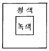

제품디자인산업기사 (2002-09-08 기출문제)
1과목: 제품디자인론
1. 독일공작연맹(DWB)에 대한 설명 중 잘못된 것은?
- 사회를 위한 조형이어야 한다는 이념
- 미술(Art), 공업(Industry), 상업(Trade)을 집결한 생산품의 품질향상 운동
- 즉물적(기능적)인 사고방식의 조형관
- 장식적인 디자인의 산업적 응용
(정답률: 100%)

2. 디자인사에 있어서 기능주의 표현과 가장 관계가 적은 사람은?
- 호라티오 그리노프(Horatio Greenough)
- 루이스 설리반(Louis Sullivan)
- 프랭크 로이드 라이트(Frank Lloyed Wright)
- 윌리암 모리스(William Morris)
(정답률: 알수없음)
3. 모든 실질적 수단을 동원해 영국의 산업제품 디자인 개선을 목적으로 1944년 설립된 디자인 진흥기구는?
- CoID
- ADI
- CCI
- JIDA
(정답률: 알수없음)
4. 대칭(Symmetry)의 기본조작에 속하지 않는 것은?
- 반사
- 이동
- 회전
- 평행
(정답률: 알수없음)
5. 입체에 대한 설명이 올바른 것은?
- 점이 이동하는 궤적
- 선이 이동하는 궤적
- 면이 이동하는 궤적
- 위치는 있으나 크기가 없는 것
(정답률: 100%)
6. 문자디자인의 조건에 관한 설명 중 잘못된 것은?
- 디자인의 목적에 알맞게 조화를 이루워야 한다.
- 읽기 쉽고 멀리 떨어져 있어도 잘 보여야 한다.
- 될수록 크게 하여 인지도를 높인다.
- 균형이 잘 잡혀야 한다.
(정답률: 알수없음)
7. 다음 중 공업디자인의 프로세스(process)가 올바른 것은?
- 디자인기획 – 아이디어스케치 – 렌더링 – 도면 – 모형 - 디자인결정- 생산
- 아이디어스케치 – 디자인기획 – 렌더링 – 모형 – 도면 - 디자인결정- 생산
- 디자인기획 – 렌더링 – 아이디어스케치 – 도면 - 모형 - 디자인결정- 생산
- 디자인기획 – 아이디어스케치 – 모형 – 렌더링 – 도면 - 디자인결정- 생산
(정답률: 알수없음)
8. 착시에 관한 설명 중 틀린 것은?
- 착시는 빛의 투과율과 관계가 있다.
- 외곡된 모습으로 지각되는 것을 말한다.
- 폰즈 및 자스트로우 착시는 크기나 위치의 착각을 말한다.
- 명암이나 색에 의해서도 착시현상이 생긴다.
(정답률: 알수없음)
9. 현대 산업디자인의 궁극적인 목표에 가장 가까운 것은?
- 디자이너 개인의 조형적 욕구 표현
- 공업제품의 생산단계 설정
- 기업의 이윤 추구
- 대량생산을 통하여 대중을 위한 실용성 창조
(정답률: 100%)
10. 경쟁사가 대체품 또는 유사품을 개발하여 시장경쟁이 시작되는 단계로서 자사의 제품차별화 전략을 필요로 하는 제품의 수명주기는?
- 도입기
- 성장기
- 성숙기
- 쇠퇴기
(정답률: 알수없음)
11. 다음 중 제품 디자인의 영역과 거리가 먼 것은?
- 포장디자인
- 용기디자인
- 가구디자인
- 완구디자인
(정답률: 알수없음)
12. 세계 산업 대박람회는 디자인 운동의 중요한 계기가 되었다. 다음 중 연결이 바르지 못한 것은?
- 1851년 런던 산업 대박람회 - 미술공예운동
- 1900년 파리 엑스포 - 아르누보
- 1925년 파리 엑스포 - 아르데코
- 1930년 스톡홀름 엑스포 - 신조형주의
(정답률: 64%)
13. 아르누보(Art Nouveau) 양식에 관한 설명 중 올바른 것은?
- 곡선을 중심으로 하는 장식 기법이다.
- 인상파풍의 회화 기법이다.
- 대량 생산된 제품의 공통된 장식이다.
- 정적으로 규격화된 기법이다.
(정답률: 알수없음)
14. 디자인의 조건 중 과학적 기초위에 성립되어 실용상의 가장 큰 의미를 갖는 것은?
- 합목적성
- 심미성
- 경제성
- 창조성
(정답률: 알수없음)
15. 20세기 후반에 일어난 포스트 모더니즘의 특징은?
- 유희적 요소의 강조
- 기능적인 실용성 추구
- 전통양식의 재현
- 기하학적 단순성과 통일성
(정답률: 알수없음)
16. 1920∼1930년대 유럽의 광고 디자인에 객관적인 정보내용 전달 경향이 커지면서 주로 이용된 것은?
- 사진
- 영화
- 회화
- 일러스트레이션
(정답률: 알수없음)
17. 구성원리 중 가장 중요한 개념은?
- 변화와 통일
- 대비와 반복
- 점진과 리듬
- 대칭과 비대칭
(정답률: 70%)
18. 제품디자이너(Product designer)의 자세와 비교적 거리가 먼 것은?
- 자신에게 주어진 새 기술과 다른 재료를 이용하여 꾸준한 제품 디자인에 임해야 한다.
- 제품과 인간의 관계를 보다 조화롭게 이끌어 올리도록 노력해야 한다.
- 사용하려는 기술과 재료에 대하여 권위자가 되도록 노력해야 한다.
- 현실의 가능성과 여건을 최대한 활용한다는 자세에서 접근하고 확대해 나가야 한다.
(정답률: 알수없음)
19. 품질관리란 소비자를 만족시킬 수 있는 제품을 가장 경제적으로 생산하기 위해 수행되는 모든 활동의 전체시스템을 말한다. 다음 중 품질관리의 목적과 거리가 먼 것은?
- 신제품 개발 촉진
- 품질의 고급화
- 견적서 작성의 신속성
- 원가절감 대책강구
(정답률: 알수없음)
20. 다음 중 산업디자인과 제품개발의 유형 발전도의 순서가 올바르게 나열된 것은?
- 모방디자인 – 수정디자인 – 적응디자인 – 혁신디자인 - 발명디자인
- 모방디자인 – 적응디자인 – 수정디자인 – 혁신디자인 - 발명디자인
- 모방디자인 – 수정디자인 – 혁신디자인 – 적응디자인 - 발명디자인
- 모방디자인 – 적응디자인 – 혁신디자인 – 수정디자인 - 발명디자인
(정답률: 59%)
2과목: 인간공학
21. 미각기인 혀의 윗면에서 안쪽면(영역)에 가장 민감한 맛은?
- 단맛
- 쓴맛
- 신맛
- 짠맛
(정답률: 알수없음)
22. 다음 중 동작경제(motion economy)의 원칙과 맞지 않는 것은?
- 양손의 동작을 동시에 한다.
- 동선을 최소화한다.
- 물리적 조건을 활용한다.
- 기본동작을 많이 도입한다.
(정답률: 알수없음)
23. 다음 중 인간의 일상적인 대화에 필요한 음압 강도는 몇 dB 정도인가?
- 60 ~ 70dB
- 85 ~ 100dB
- 110 ~ 120dB
- 130 ~ 150dB
(정답률: 90%)
24. 운동형태를 묘사할 때 구부리거나 몸의 부분 사이의 각도를 줄이는 것은?
- 유착(flexion)
- 확장(extension)
- 외전(abduction)
- 내전(adduction)
(정답률: 알수없음)
25. 외관의 운동(apparent motion)에 관한 설명 중 가장 적절한 것은?
- 물체를 볼 때 두눈에 서로 다른 상이 비친다.
- 시야에 들어온 물체는 이중상으로 보인다.
- 적당한 강도의 빛을 등간격으로 보내면 빛이 이동하는 것 같은 현상이다.
- 도형이나 색채에서 일어나는 착오현상이다.
(정답률: 알수없음)
26. 인간공학적 입장에서 산업디자인을 할 경우 설계의 필요성을 가장 잘 나타낸 것은?
- 보전(maintenance)이 쉬울 것
- 편리하고 안전성(utility and safety)이 있을 것
- 코스트가 쌀 것
- 외관성(appearance)이 좋을 것
(정답률: 알수없음)
27. 다음 중 추천반사율이 가장 낮은 것은?
- 가구
- 벽
- 바닥
- 천장
(정답률: 알수없음)
28. 서있을 때 쥔 손잡이에 가장 힘이 들어가는 높이는?
- 눈높이
- 턱높이
- 어깨높이
- 가슴높이
(정답률: 알수없음)
29. 근시, 원시, 난시 등은 어느 상태를 나타낸 것인가?
- 눈의 근접거리
- 안구의 굴절
- 눈의 분광투과율
- 안구의 크기
(정답률: 알수없음)
30. 인간이 외계에서 자극을 받게되면 감각 기관이 흥분하여 신호가 대뇌에 전달되며, 여기에서 판단이 내려져서 알맞는 신체부위에 동작을 하도록 명령된다. 이와같이 자극을 받은 것에 의해서 말단의 부분이 움직이는 것은?
- 반응
- 자극
- 반복
- 결정
(정답률: 알수없음)
31. 손의 지각 기능 중 형태나 크기를 아는 기능은?
- 입체식별 기능
- 중량식별 기능
- 경도식별 기능
- 온도식별 기능
(정답률: 알수없음)
32. 교통 표지물에 검정색과 노랑색의 배색이 많은 이유와 거리가 먼 것은?
- 명시성
- 경제성
- 주목성
- 가시성
(정답률: 64%)
33. 높이가 다른 두 지점을 연결하는데는 경사로, 계단, 사다리 등의 수단이 있다. 일반적으로 다른 조건이 없이 주어진 두 지점이 이루고 있는 각도로서 30-45도의 경사가 주어진 공간에 가장 적합한 시설은?
- 경사로
- 계단
- 사다리
- 구름다리
(정답률: 알수없음)
34. 다음 그림에 해당되는 착시(Optical illusion)현상은?
- 분할의 착시
- 수직 수평의 착시
- 각도, 방향의 착시
- 반전 실체의 착시
(정답률: 알수없음)
35. 색에는 물체색과 광원색이 있다. 다음 중 광원색을 나타내는 것은?
- 네온사인
- 필터
- 색지
- 페인트
(정답률: 알수없음)
36. 앉는 자세에 영향을 주는 의자의 주요 요소와 비교적 거리가 먼 것은?
- 좌석면
- 의자 등받침
- 지면
- 다리의 위치
(정답률: 알수없음)
37. 소리를 청신경 중추에 보내는 역할을 하는 것은?
- 외이
- 내이
- 중이
- 고막
(정답률: 70%)
38. 기계가 인간을 능가하는 기능은?
- 완전히 새로운 해결책을 찾아낸다.
- 오랜 기간에 걸쳐 작업을 수행한다.
- 원칙을 적용하여 다양한 문제를 해결한다.
- 다양한 운용상의 요건에 맞추어 신체적인 반응을 적응시킨다.
(정답률: 92%)
39. 팔길이의 실측은?
- 등면에서 수평으로 장지끝까지 행해진다.
- 등면에서 수평으로 엄지끝까지 행해진다.
- 등면에서 수평으로 약지끝까지 행해진다.
- 등면에서 수평으로 손목끝까지 행해진다.
(정답률: 알수없음)
40. 표지판 제작시 유의사항 중 가장 거리가 먼 것은?
- 조명
- 읽기 쉬운 정도
- 소구대상의 성별
- 표지판과 표지판을 보는 사람과의 거리
(정답률: 100%)
3과목: 공업재료 및 모형제작론
41. 금속모형(metal model)에 관한 설명 중 잘못된 것은?
- 제품 각부분의 외관 질감을 그대로 표현해 볼 때 사용된다.
- 주로 접착제가 많이 사용되므로 접착제의 선택이 중요하다.
- 프로토타입모델(prototype model)에 자주 사용된다.
- 양산용(금형제작직전)의 마스터모델(master model)로 사용된다.
(정답률: 알수없음)
42. 재료의 관리요령을 설명한 내용 중 잘못 것은?
- 폴리스틸렌폼의 표면 오물을 신너로 닦아내었다.
- 목재의 표면에 동백오일을 칠했다.
- 종이표면에 필름을 코팅하였다.
- 유리표면을 비눗물로 닦아내었다.
(정답률: 알수없음)
43. 다음 점토모형에 대한 설명 중 틀린 것은?
- 자유로운 형태를 표현할 수 있는 성질을 가지고있다.
- 운반과 보관이 편리하다.
- 비교적 신속하게 형태를 구 할 수 있다.
- 강도나 표면처리에는 어려운점이 있다.
(정답률: 알수없음)
44. 플라스틱 성형품에 금속색의 문자나 장식을 넣으려 할 때 가장 적합한 방식은?
- 마스터 인쇄
- 그라비아 인쇄
- 핫 스템핑
- 인 몰드법
(정답률: 알수없음)
45. 종이를 한쪽에서 다른 쪽으로 찢을 때 받는 응력을 말하며, 힘의 측정단위가 g으로 표시되는 것은?
- 인장강도
- 파열강도
- 인열강도
- 신축율
(정답률: 알수없음)
46. 오프셋 인쇄 판식은?
- 볼록판
- 오목판
- 공판
- 평판
(정답률: 알수없음)
47. 디자인 준비 단계에 해당하지 않는 것은?
- 목표설정
- 문제분석
- 모델전개
- 시장분석
(정답률: 알수없음)
48. 무기 안료가 아닌 것은?
- 티탄백(TiO2)
- 산화철(Fe2O3)
- 한사(Hansa)
- 아연화(ZnO)
(정답률: 알수없음)
49. 다음 점토제품 중 흡수성이 가장 큰 것은?
- 토기
- 도기
- 석기
- 자기
(정답률: 알수없음)
50. 다음 목재 중 기건비중이 가장 작은 나무는?
- 포프라
- 호도나무
- 오동나무
- 감나무
(정답률: 62%)
51. 다음 중 수분의 영향을 가장 적게 받는 재료는?
- 금속
- 종이
- 플라스틱
- 목재
(정답률: 알수없음)
52. 벨트샌더(belt sander)에 관한 올바른 설명은?
- 나무나 금속을 빠른 속도로 사포질 할 수 있는 기계이다.
- 다기능 대패의 기능을 축소한 마무리용 기계이다.
- 표면고르기 등 최후 마무리를 위한 샌더이다.
- 기구의 날 부분을 연마하는 기계이다.
(정답률: 알수없음)
53. 프레스작업에 관한 안전사항 중 틀린 것은?
- 금형구조의 결함에 의해서는 재해가 일어나지 않는다.
- 작업 중 신체의 균형을 잃지 않도록 한다.
- 가공품 또는 스크랩을 비산시키지 않아야 한다.
- 프레스기계에 2중으로 안정장치를 강구한다.
(정답률: 91%)
54. 유리제조에서 산화제로 쓰이는 것은?
- 탄소
- 과산화 바륨
- 칼륨
- 황산 암모니움
(정답률: 알수없음)
55. 코도반(Cordoban)이란 마피의 어느 부분의 피혁인가?
- 목 부분
- 배 부분
- 등 부분
- 엉덩이 부분
(정답률: 80%)
56. 도면에서 절단면을 표시하는 선은?
- 파단선
- 은선
- 해칭선
- 굵은일점쇄선
(정답률: 알수없음)
57. 표면에 닿은 빛이 입사각 그대로 대칭되게 반사되는 상태로 명암의 콘트라스트(contrast)를 가장 강하게 표현해야 하는 재질은?
- 목재
- 석고
- 도금된 금속
- 투명 플라스틱
(정답률: 77%)
58. 금속 가공의 후처리로 표면에 평활을 강조하여 미려한 광택을 부여하는 방법은?
- 라이닝처리
- 양극산화처리
- 화성처리
- 버핑처리
(정답률: 알수없음)
59. 한면이 정오각형으로 이루어지는 입체는?
- 4면체
- 6면체
- 12면체
- 20면체
(정답률: 알수없음)
60. 다음 중 도금의 경도가 가장 높은 것은?
- 은
- 니켈
- 아연
- 크롬
(정답률: 46%)
4과목: 색채학
61. 파랑색(Blue)의 상징성으로 가장 적합한 것은?
- 정의
- 침착
- 순결
- 사망
(정답률: 50%)
62. 다음 중 문· 스펜서의 색채조화론에 대한 특징은?
- 질서, 동류성, 친근성, 명료성의 원리
- 색채 조화에 관한 4가지 원리
- 과학적이고 정량적인 색채조화론
- 애매하지않도록 선택된 배색에 의한 조화론
(정답률: 알수없음)
63. 색의 대비효과와는 반대되는 현상이 특수한 배색의 경우 나타난다. 이와 같은 현상은?
- 색의 동시대비현상
- 색의 동화현상
- 중간혼합현상
- 푸르킨예현상
(정답률: 알수없음)
64. 색채 조화의 원리는 자연이다. 저녁놀 가을의 붉은 단풍잎, 동물과 곤충 등의 색들이 우리에게 잘 알려진 배색으로서 조화한다는 원리는?
- 질서의 원리
- 친밀의 원리
- 유사의 원리
- 비모호성의 원리
(정답률: 알수없음)
65. 파장과 색명의 관계에서 '청색 기미의 자색'의 파장범위는?
- 380 – 430nm
- 483 - 488nm
- 530 – 558nm
- 640 - 780nm
(정답률: 60%)
66. 색채관리에 대한 설명 중 가장 올바른 것은?
- 색채의 통합적인 활용 방법이다.
- 색채를 계열별로 관리하는 방법이다.
- 제품색의 기호도를 조사하는 방법이다.
- 제품의 기능과 품질을 색채와 분리하는 방법이다.
(정답률: 30%)
67. 색상의 그라데이션(gradation)이란?
- 강조색이 없는 배색의 상태
- 한가지 색이 다른 색채로 옮겨갈 때 진행된 변화
- 여러 주조색으로 인해 통일된 상태
- 유사색상의 조화된 상태
(정답률: 100%)
68. 다음 색채조절에 관한 설명 중 적절하지 못한 것은?
- 장시간 보여지는 대상물에 대해서는 고명도 고채도는 피한다.
- 색채조절을 하기 위해서는 다양한 칼라를 사용해야만 한다.
- 실내에 있어서 조명의 특성을 이용하여 조명 효율을 높인다.
- 색채에 의한 심리적 효과를 이용하여 그 방의 이용가치를 높인다.
(정답률: 90%)
69. 그림과 같이 청색면으로 둘러싸인 녹색면은?

- 청색기미를 띠어 보인다.
- 황색기미를 띠어 보인다.
- 자주색 기미를 띠어 보인다.
- 적색기미를 띠어 보인다.
(정답률: 알수없음)
70. 다음 중 대비효과가 가장 큰 배색 조화는?
- 녹색 – 남색
- 주황 - 연두
- 노랑 – 남색
- 빨강 - 보라
(정답률: 알수없음)
71. 파랑색과 검정색의 중간에 색을 넣어 분리, 격리되어 보이는 세퍼레이션(Separation)의 효과를 주고자한다. 가장 적합한 것은?
- 녹색
- 어두운 회색
- 노랑
- 빨강
(정답률: 알수없음)
72. 적(red), 녹(green), 청(blue) 삼원색을 혼합하여 백색광과 같게 하는 혼색 방법은?
- 중간혼색
- 감법혼색
- 가법혼색
- 단일혼색
(정답률: 82%)
73. 오스트발트(Ostwald)색상환은 무채색 축을 중심으로 몇 색상이 배열되어 있는가?
- 9
- 10
- 24
- 35
(정답률: 알수없음)
74. 먼셀의 색표시 기호 중 V(Value)가 나타내는 것은?
- 색상
- 명도
- 채도
- 휘도
(정답률: 알수없음)
75. 다음 중 색의 온도감이 가장 낮은 것은?
- 황록
- 흰색
- 녹색
- 황색
(정답률: 알수없음)
76. 색의 온도감에 대한 설명 중 가장 적합한 것은?
- 장파장의 색이 따뜻하고 단파장의 색이 차갑다.
- 명도가 낮은 검정계통은 차갑게 느껴진다.
- 같은 색이라도 광택이 있으면 더 따뜻하게 느껴진다.
- 저명도의 색은 한난의 감정이 없다.
(정답률: 알수없음)
77. 유채색의 범위에 관한 설명 중 가장 적절한 것은?
- 프리즘을 통과해 나타난 일곱가지의 색
- 무채색을 제외한 모든 색
- 중간색을 제외한 모든 순색
- 정상시각을 지닌 사람이 볼 수 있는 모든 색
(정답률: 알수없음)
78. 보색의 설명 중 맞는 것은?
- 혼합하면 무채색이 된다.
- 보라와 자주는 서로 보색관계를 이룬다.
- 색상환에서 거리가 가까운 색을 말한다.
- 보색끼리 배색하였을 때 단계적으로 명도차가 난다.
(정답률: 알수없음)
79. 다음 중 병실의 천정색으로 가장 적합한 것은?
- 명도 8전후, 채도 2
- 명도 5전후, 채도 4
- 명도 4전후, 채도 3
- 명도 2전후, 채도 4
(정답률: 알수없음)
80. 광(光)파장의 차이에 따라 변하는 색채의 위치를 나타내는 것은?
- 색상
- 명도스케일
- 등채도
- 순도
(정답률: 알수없음)